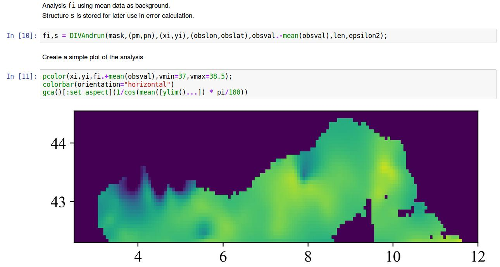

2nd On-line SeaDataCloud User Workshop
Hi-Tech to High Knowledge
Data interpolation: what can we do {for, with} you?


What is DIVA?
Data
Interpolating
Variational
Analysis

What do we mean by "interpolation?"

Getting gridded fields from sparse, in situ data
(≃ getting information where we don't have measurements)
Why interpolation in oceanography
is a complex task?"
- A large (huge) amount of data points available
- Regions without any observation
- Physical obstacles: the topography
- Multi-dimensional: longitude, latitude, depth and time
How does DIVA work?
1. Observations influence their neighbourhood
over a certain distance
2. Observations are assigned a certain weigh,
translating the confidence of the measurement
3. The tool minimises a cost function taking into account:
- The distance between observation and analysis
- The regularity (or smoothness) of the interpolated field

Implementation: DIVAnd vs. DIVA
What is [not] DIVAnd?
= n dimensional version of DIVA
≠not a new release of DIVA,
= brand new code
= current version of the tool
What are the differences
between them?
Mathematical formulation
Programming language
User interface
How to use DIVAnd?
Download the code
https://github.com/gher-ulg/DIVAnd.jl
https://github.com/gher-ulg/DIVA
DIVA (2D) within Ocean Data View
http://odv.awi.de/
DIVA-on-Web (2D)
http://ec.oceanbrowser.net/emodnet/diva.html
Jupyter notebooks inside the Virtual Research Environment
DIVAnd REST API (2D)

Who's using it?
SeaDataCloud regional leaders
Regional climatologies for temperature and salinity
https://www.seadatanet.org/Products/Climatologies
EMODnet Chemistry regional leaders
Gridded fields of nutrient concentrations
http://www.emodnet-chemistry.eu/products
EMODnet Biology
Creation of specific products
http://www.emodnet-biology.eu/data-products

Recent developments:
interpolation of velocity measurements
High-frequency radar interpolation
Synthetic velocity field, red arrow = measurement
High-frequency radar interpolation
Adding the influence of the coast
High-frequency radar interpolation
Low horizontal divergence of currents
High-frequency radar interpolation
Including Coriolis force and geostrophically balanced mean flow
Applications: Ibiza Channel, Gulf of Trieste, Liguria
Concluding remarks
Your state after this presentation?
Bad work, I don't want to use this tool
Not bad, but I'll never use it
Cool, I want to try it with a dataset of mine
Why may I not be able to use it?
Hofstadter's Law:
"It always takes longer than you expect,
even when you take into account Hofstadter's Law.""
Who is Julia?
Julia Child (1912-2004)

By Lynn Gilbert - Own work, CC BY-SA 4.0, https://commons.wikimedia.org/w/index.php?curid=51678880
Quick recap
- DIVAnd is a software tool specifically designed for the spatial interpolation of oceanographic data
- Its code is written in the Julia language and optimise to process large amounts of data
- The tool is currently used in different EMODnet lots and deployed in the frame of other Europea initiaves such as PHIDIAS, BlueCloud, EOSC-Hub